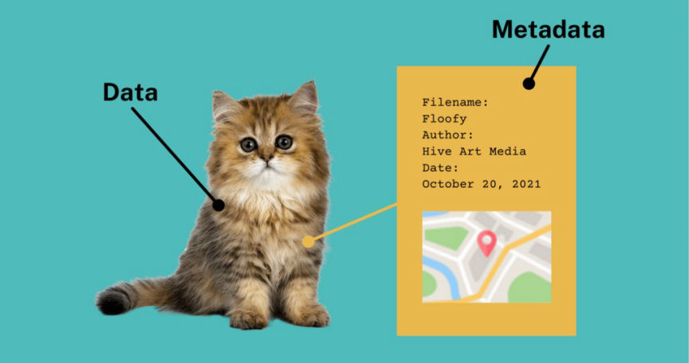
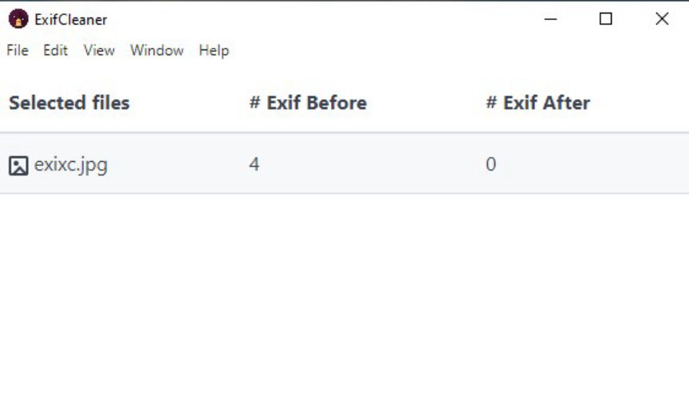
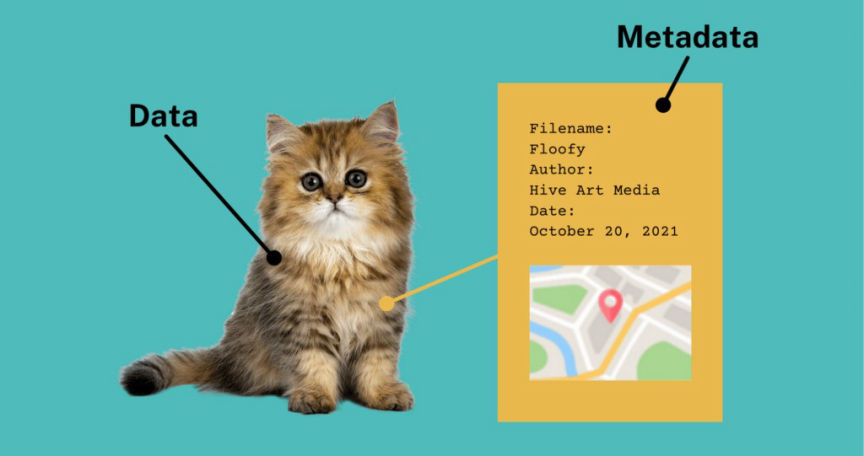
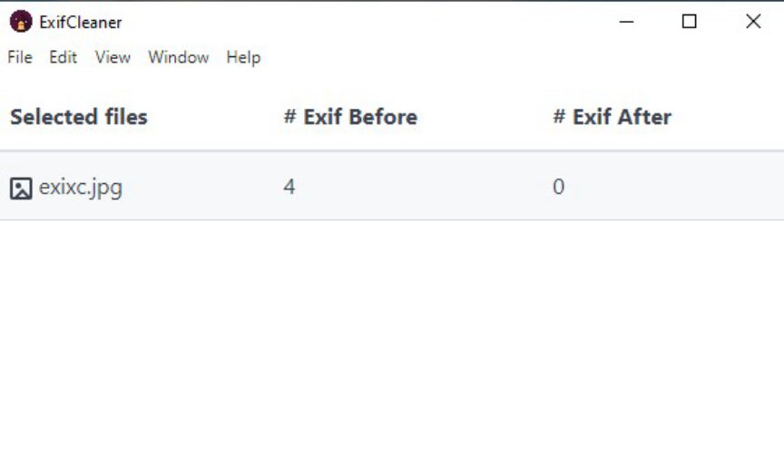

How to Remove Metadata from Files
Metadata can be simply defined as a summary of basic information about data that is embedded in files. Metadata includes information such as the file's time and date of creation, creator, size, and location.

Metadata can be found on all forms of files including PDFs, images, and audio files. The metadata in an image file, for example, could include pieces of information such as the date, time, and location of when the photo was taken.
The sharing of files that contain this metadata could lead to the revelation of private and confidential information. Sharing of files with metadata could place the freedom and lives of people such as whistleblowers and journalists at risk.
Law enforcement can use location data available in files to identify and acquire warrants against suspects. This dark web drugs vendor was identified thanks to GPS data found in the metadata of images he used in his listings.
To remove metadata from your files use any of the following tools:
ExifTool is a Perl library and command-line tool that can be used in reading, writing, and editing metadata in a wide variety of file formats.
ExifTool is available on Tails and Whonix Workstation by default. It is also available in most Linux distribution repositories.
You need to install ExifTool to be able to use it on Windows.
We are going to use an image named "filename.jpg" as an example.
ExifCleaner is a metadata removal application available for Windows, Mac, and Linux.
It removes metadata from files automatically after you drop them into the application.

mat2 is capable of removing metadata from a wide variety of file formats.
mat2 is available on Tails by default.
To remove data from files on Tails, Right click on the file and choose Remove metadata.
In Linux, mat2 allows you to use either a command line tool or a graphical user interface
To install mat2 on Linux run the following commands
sudo apt update
sudo apt install mat2
We will illustrate with an image named "filename.jpg".
There exists a GUI tool for mat2 called Metadata Cleaner. Metadata Cleaner is available for download on Flathub.
Files we share with others especially images contain lots of data that we may not want to disclose. To avoid revealing sensitive information, use any of the above tools to remove metadata from your files before sharing.

Information revealed by an image's metadata
Metadata can be found on all forms of files including PDFs, images, and audio files. The metadata in an image file, for example, could include pieces of information such as the date, time, and location of when the photo was taken.
The sharing of files that contain this metadata could lead to the revelation of private and confidential information. Sharing of files with metadata could place the freedom and lives of people such as whistleblowers and journalists at risk.
Law enforcement can use location data available in files to identify and acquire warrants against suspects. This dark web drugs vendor was identified thanks to GPS data found in the metadata of images he used in his listings.
To remove metadata from your files use any of the following tools:
ExifTool
ExifTool is a Perl library and command-line tool that can be used in reading, writing, and editing metadata in a wide variety of file formats.
ExifTool is available on Tails and Whonix Workstation by default. It is also available in most Linux distribution repositories.
ExifTool in Windows
You need to install ExifTool to be able to use it on Windows.
- Go here to download the Windows executable file.
- Unzip the archive.
- Rename the "exiftool(-k).exe" file to "exiftool.exe". This will make it possible for you to run ExifTool by typing "exiftool" at the command prompt.
ExifTool in macOS
- Go here to download ExifTool's MacOS package. After the download is complete go ahead and install the package.
- Run Exiftool by typing "exiftool" in a Terminal window.
Removing Metadata with ExifTool
We are going to use an image named "filename.jpg" as an example.
- To display the metadata in the image, run: exiftool filename.jpg.
- To remove all metadata present in the file, run: exiftool -all= filename.jpg.
ExifCleaner
ExifCleaner is a metadata removal application available for Windows, Mac, and Linux.
It removes metadata from files automatically after you drop them into the application.

ExifCleaner in Action
- Go here to download the app for your device.
- Run the application and drag and drop files into the application window to remove metadata.
mat2
mat2 is capable of removing metadata from a wide variety of file formats.
mat2 is available on Tails by default.
To remove data from files on Tails, Right click on the file and choose Remove metadata.
In Linux, mat2 allows you to use either a command line tool or a graphical user interface
To install mat2 on Linux run the following commands
sudo apt update
sudo apt install mat2
Using mat2 in Linux to remove metadata
We will illustrate with an image named "filename.jpg".
- To check the metadata available in a file, run: mat2 -s filename.jpg.
- To remove the metadata run: mat2 filename.jpg. After running this command mat2 will create a new file named "filename.cleaned.jpg".
- If you want to remove the metadata without creating a backup of the file, run: mat2 --inplace filename.jpg.
There exists a GUI tool for mat2 called Metadata Cleaner. Metadata Cleaner is available for download on Flathub.
Files we share with others especially images contain lots of data that we may not want to disclose. To avoid revealing sensitive information, use any of the above tools to remove metadata from your files before sharing.